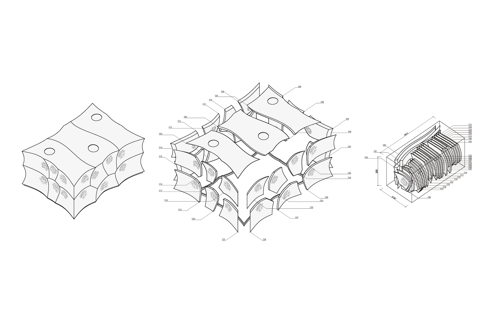
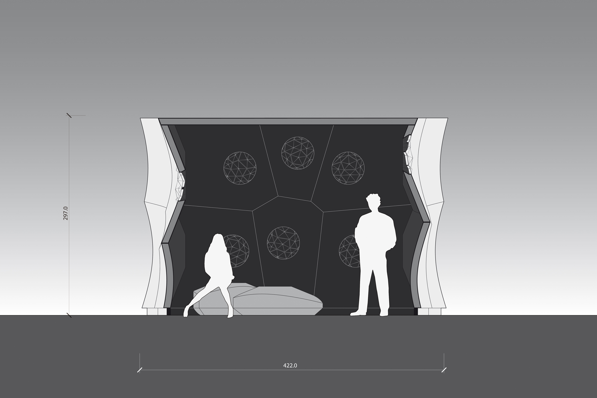

Internship project
for Prof. Achim Menges
(ICD, University of Stuttgart)
with Steffen Reichert, Oliver David Krieg
2012, Stuttgart


Commissioned by FRAC Centre Orleans, this pavilion served as an architecture-scale demonstrator for a previously developed climate-active veneer system. My role in it was in the conceptual and schematic design phases, during which a modular system had to be developed that would incorporate humidity-reactive openings and balance logistic and fabrication feasibility with a diverse form articulation.


The modules were thus developed as truncated conical elements whose rotational symmetry facilitated their post-processing on a rotating external axis. The arrangement of the modules had to preserve planar cross sections between the cones to rationalise the connections between the structural elements.

More info here.